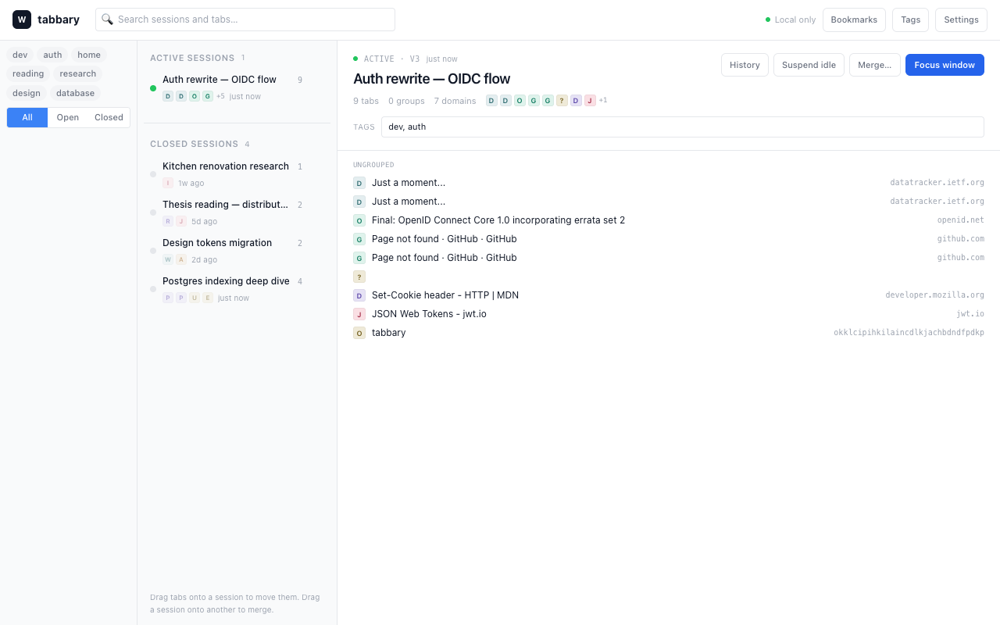
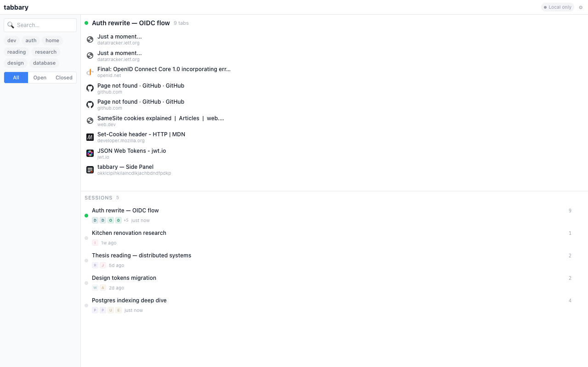
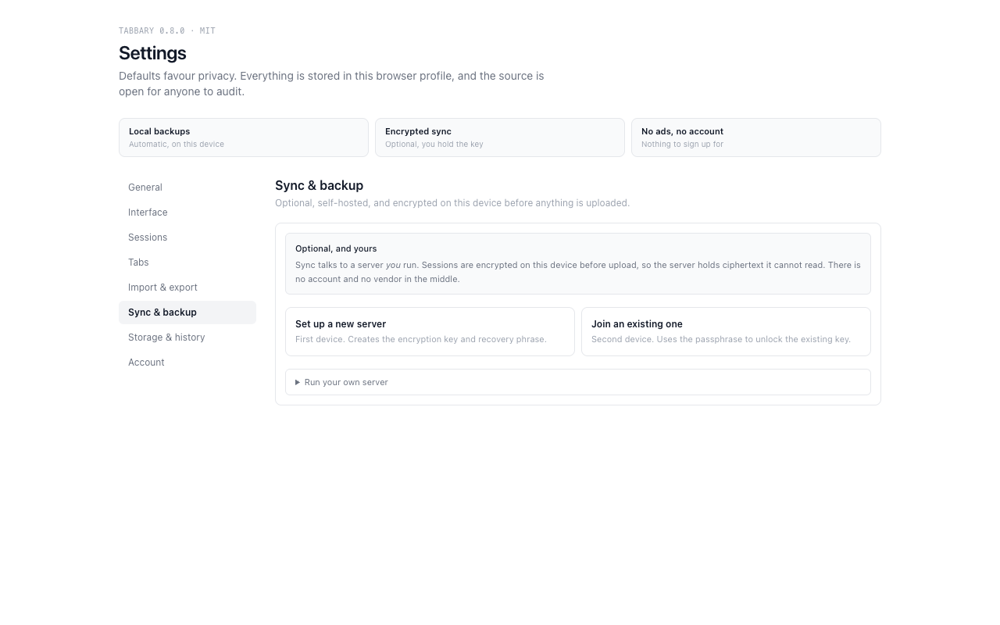

Chrome extension · MIT
Keep the tabs you're working on.
tabbary saves the tabs in each window as a session while you browse. When you come back, it reopens them in order, with their tab groups and pinned tabs.
There is no save button, and no account.

What it does
Saving runs off Chrome's tab events. Opening, closing, moving or grouping a tab schedules a write; tabbary waits for the burst to settle, then stores that window's tabs and groups. An accidental close or a browser crash leaves the session on disk.
Restoring opens a window, recreates the groups with chrome.tabs.group, then
reapplies each group's title, colour and collapsed state. A group that no longer exists is
skipped rather than failing the whole restore.
- Every session keeps a revision history. Restoring an older version snapshots the current state first, so the restore is undoable.
- Search covers session names, tab titles, URLs and bookmarks.
- Tags have counts, bulk rename and bulk delete, applied to every session carrying them.
- Bookmarks can be scoped to a session, a tag, or Chrome itself, and a folder can be opened as a session.
- Import accepts tabbary's own JSON or encrypted export, OneTab exports, and plain lists of URLs.
- Suspension uses Chrome's own discard, and shows what it would unload before it does.
- The popup, side panel, full-tab manager and dedicated window all read the same database.
Session managers tend to charge for restore history, or keep your sessions on their servers. tabbary keeps them in your browser profile, and gives you the sync server to run yourself.
What's missing
One window is one session; there is no single-window mode. Bookmarks don't sync, because tags travel inside session blobs and Chrome's bookmarks are import-only. Sync polls your server on an interval you set rather than using push. The optional history permission can be granted, but no feature reads it yet.
What it can see
No host permissions at install. tabbary reads Chrome's tab metadata — titles and URLs — which is what a session needs. It cannot read page contents and does not inject anything into pages.
The history and bookmarks permissions are optional. They are requested only when you use the feature that needs them, and can be revoked afterwards without uninstalling.
Sync is ciphertext-only. Sessions are encrypted on your device with a key the server never receives, so the server cannot read them, and cannot reset a passphrase you forget. You run that server yourself; there is a deploy guide.
Exports are plain JSON by default, so you can read and diff them. There is an encrypted variant if you would rather they were not readable.


Install
Chrome 116 or newer. There is no store listing yet, so build it from source.
git clone https://github.com/abominox/Tabbary.git
cd Tabbary
npm ci
npm run buildThen load it:
- Open
chrome://extensions. - Turn on Developer mode.
- Choose Load unpacked and select the
dist/folder. - Click the tabbary icon in the toolbar.
npm test runs the unit tests, npm run test:server runs the sync
server's tests, and npm run test:e2e:all drives the built extension in
Chromium.